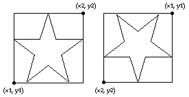

drawstar
Syntax
drawstar (x1, y1, x2, y2, Color : int)
Description
The drawstar procedure is used to draw a star on the screen bounded by a rectangle described by the bottom left and top right corners of (x1, y1) to (x2, y2) using the specified Color. If y1 is greater than y2, then the star is drawn upside down.

Example
This program will draw two stars beside each other. The first will be in color 1 and the second star will be upside down and in color 2.
setscreen ("graphics")
drawstar (0, 0, 100, 100, 1)
drawstar (150, 100, 250, 0, 2)
Details
The drawstar procedure is useful for drawing the American flag.
The meaning of the Color number depends on the current palette. See the palette statement.
The screen should be in a "graphics" mode. See the setscreen procedure for details. If the screen is not in a "graphics" mode, it will automatically be set to "graphics" mode.
See also
setscreen, maxx, maxy and the various draw… procedures.